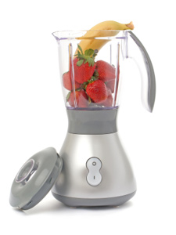

The web's #1 resource for smoothie recipes
Our mission statement
We here at SmoothieWorld are devoted to making the smoothie beverage a daily part of your life. Whether it be for breakfast, lunch or even dinner, smoothies are great way to get the nutrition you need and have fun while doing it.
The recipes on our site have all been tested in our lab of smoothie experts. Other smoothie sites might have more recipes or feature more exotic fruits than you'll find here, but we feel that quality beats out quantity and novelty any day.We also believe the best recipes come from you the reader, that's why we encourage you to join our smoothie community. Learn more
A review of the Blend-o-Matic 3000
By Cheri White, posted December 21, 2012
The latest entry in the Blender Wars lives up to its hype
The Blend-O-Matic 3000 retails for $199.99
All blenders are created equal right? Start with a base unit and a motor, blades to spin and chop, and a jar for your ingredients. Well not so fast. The Blend-O-Matic 3000 gives you features that you never knew you wanted and in the increasingly competitive world of smoothie blenders the competition just recieved a new shot across their bow.
To be victorious in the Blender wars, a Blender must do two things extremely well: Turn chunks of fruit into pulp and crush ice. In our tests the Blend-O-Matic not only did this better than all the other competitors in its price range, but it did so 25% faster. The secret to this competition-craushingh prowess is in the mind-boggling 1400 Watt engine. That's two horsepower for those of you keeping track at home.
Need more Data?
See how we put the Blend-O-Matic 300 to the test. Link.
But a fast motor does you no good without reliable blades and a jar, the good news here is that the Blend-O-Matic 3000 is up to the task. Made out of polycarbonate the jar is both unbreakable, dishwasher safe and easy to clean.
The Blend-O-Matic 3000 also comes with a number of bells and whistles that make smoothie recipes a breeze. The ice crusher and pulse function are exceptional and I especially loved the pre-programmed settings. Instead of blending at one consistent speed, you have a number of customized blending options: the "frozen drink" setting, for example, will automatically reverse the direction of the blades for the first 30 seconds of the program, thereby mixing ice and liquids together. Then, the speed phase of the program kicks in and crushes everything to a consistent degree. End result: no more stray fruit and ice chunks!
There is one major flaw with this blender. Never, ever start the blender without the cover on! In our tests we started the blender without the cover and the speed of the motor sent a shard of ice rocketing into our ceiling. We hate to think what would have happened if we had been standing over it. I suppose here has to be a price to pay for a two horsepower engine. This small flaw not considering, you will likely be using this blender so much that it will find a permanent place on your countertop!
Questions for the author? Contact Cheri White.
© copyright 2038 SmoothieWorld.com.
New Additions
SmoothieWorld features smoothie recipes submitted by our community of users. Here are some of the highest rated recipes of the last 30 days.
The Funky Orange

Submitted by user iosborn22, this smoothie has recieved over 20 5 star ratings and its orange juice and banana base make this a great choice for breakfast!
The Tropical KickBack

Submitted by user smoothj282, this smoothie combines the exotic ingredients passionfruit and mango. The result is an invgorating and delicious beverage that is great any time of the day.